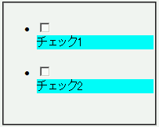
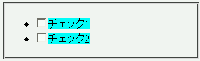

label要素の表示属性をdisplayプロパティで変更することができない。
<style type="text/css">
label {
display: block;
background: aqua;
}
</style>
<form action="#"><ul>
<li><input type="checkbox" id="cb1"><label for="cb1">チェック1</label></li>
<li><input type="checkbox" id="cb2"><label for="cb2">チェック2</label></li>
</ul></form>
label要素をブロック要素として表示させ、さらに背景色を設定しています。
WinIE6.0での表示（標準モード）
Moz1.0での表示（標準モード）
Moz1.0では不具合の発生が確認されました。